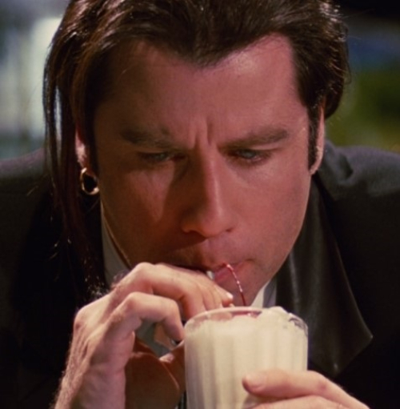
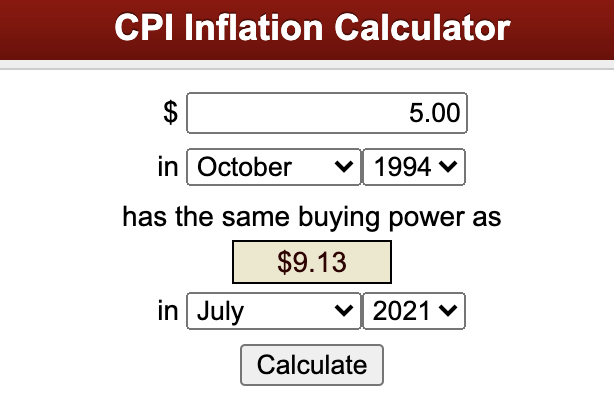

$5 Shake

Description
The $5 Shake from Pulp Fiction (1994) that makes you wonder about its price tag.
On a side note, nobody likes to hear "adjusted for inflation" but here you go.

Ingredients
- 1 medium banana (peeled)
- 1 bourbon vanilla pod or half a teaspoon of vanilla paste
- 300gm clotted cream ice cream
- 200gm natural yoghurt
- 250 ml whole milk
- 2 tablespoons of clear honey
- 5 cubes of ice
- Pinch of salt
- Griottine cherries
- Whipped cream
Steps
- Halve the vanilla pod and scrape the seeds with a small knife.
- Put this into a blender with all of the other ingredients.
- Blend until smooth and frothy.
- Pour into two suitable sized glasses and garnish with the whipped cream and the cherries.